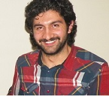

Short Biography: I am working as a Postdoctoral Fellow (PDF)with the Vaccine and Drug Evaluation Centre (VDEC) in the University of Manitoba since November 2020. I was a PDF with Electrical and Computer Engineering Department between September, 2019 - November 2020. I worked as a Research Assistant at Electronics Engineering Department, Gebze Technical University (GTU) between March 2013 - September 2019. Before working at GTU, I was working at Electronics Engineering, Istanbul Kultur University starting from April 2009. I received Ph.D. degree from Gebze Technical University, Electronics Engineering Department at 2018, MS degree from Istanbul Technical University, Telecommunication Engineering at 2011 and BS degree from Istanbul University, Electrical and Computer Eng. Dept. at 2008.
Education ~ Publications ~ CV **